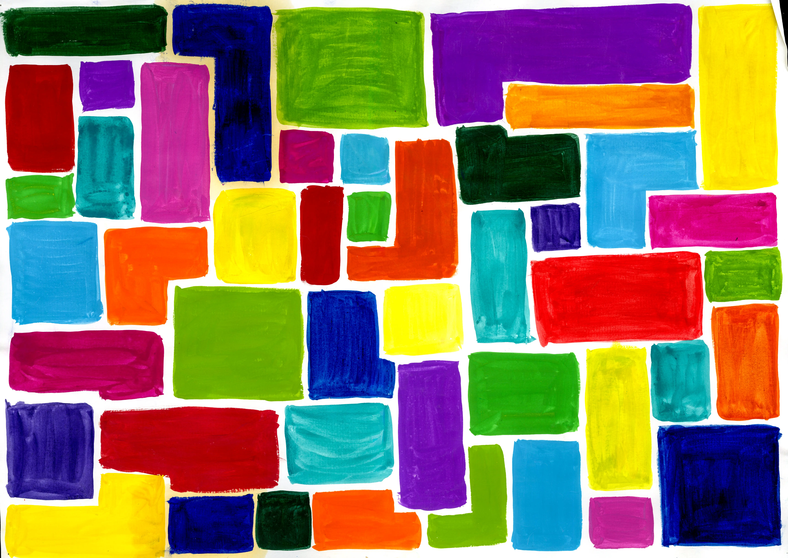
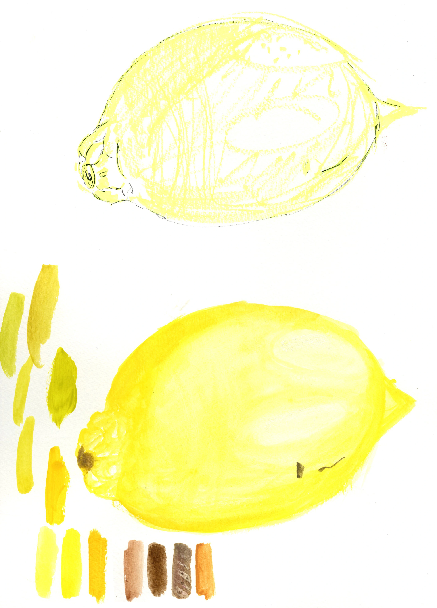
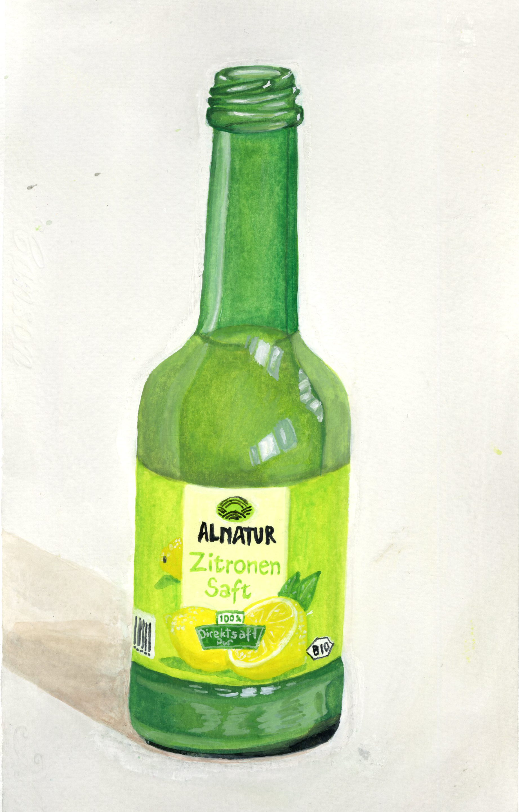
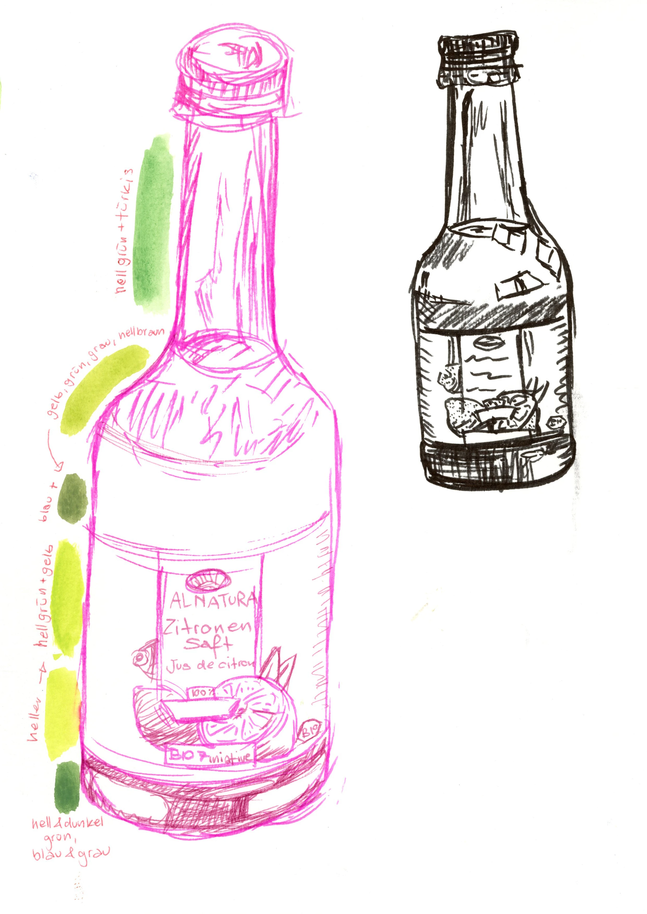
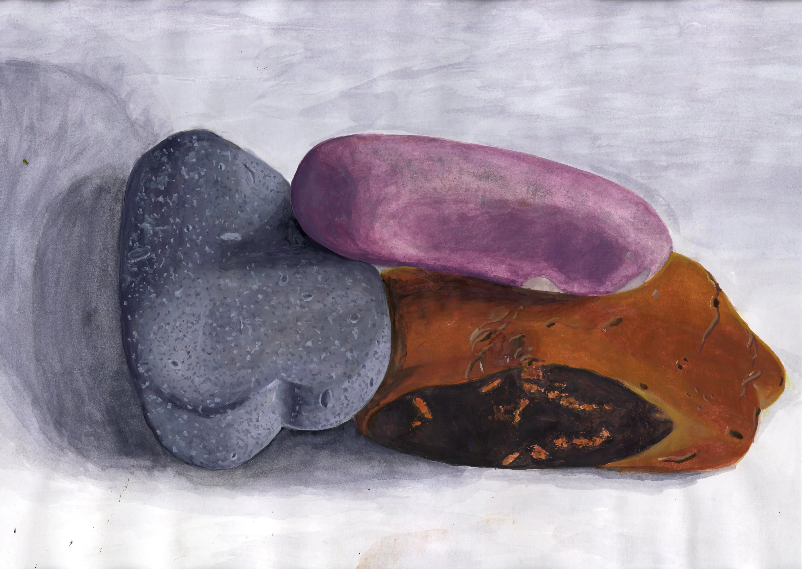
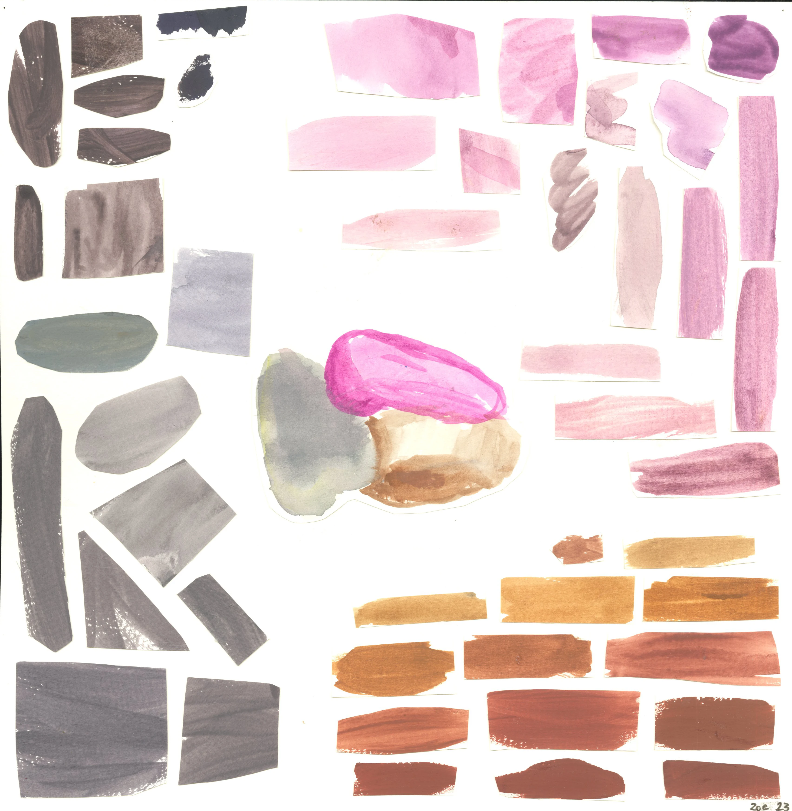

Creative Ways of Seeing
Through focused exercises, the behaviour of colour was explored, how it unfolds, mixes and builds up in layers. Grey is created here not through the classic black-and-white combination but through subtle contrasts and fine nuances. Colour fields, dabs and transitions document the journey from experiments to artistic confidence. Everyday objects such as lemons, stones and bottles served as study subjects for light, shadow and proportion. Step by step, a sharpened understanding of form and colour harmony developed. The project presents a dynamic collection of attempts, observations and creative progress, a sensory introduction to precise seeing and creative craftsmanship.





Projekt
2025
Editorialprojekt